zone-first v2 - the user's layout beside the generated top 3, with the blind-test result
Quality ranking (provisional): the score is built from the band of each metric across the user's own plans (the brief's own plan left out). One-sided metrics (Flex share, circulation share, spine length over depth, longest Flex piece over depth): only the amount above the band's max counts, and 0.1 per point of the metric's scale rewards less (a share per 1 %). Pieces per 100 m² is still shown but has score weight 0. Two-sided metrics (Core share, bedroom spread): 1 per point outside the band plus 0.1 per point from its middle. +10 if no wet room is near a bedroom, +10 if the laundry is not near the wet rooms or the Core, +10 per Flex strip, +50 per sliver. Lower is better. The user's layouts never steer generation or ranking; closeness is a diagnostic. Every zone carries its name and size (metres, 1 dp); Flex is hatched with its class, an extension is hatched the other way and labelled "Zone · extension", flex-walls are hatched with a dashed edge, the spine is dotted - nothing relies on colour.
zf-00 - theatre reference 12500 x 24000 mm, 4 bed, double garage
valid 3474/5824 generated · 2916 distinct · 1458 mirror images hidden · top 5 pairwise different: yes (largest same-kind overlap 0.81) no layout of the user's for this brief: ranked against the profile of all seven plans regression target: matched, rank 1580 of 2916
builder planuser's zoning drawingtop 1 (rank 1 of 2916) L|rear|block|m:middle/split|wet:split|rr:-|nofw|v2 score 8.04 · Flex share 17% · living 0% (0.0 m²) · circulation 9% · Core 27% · pieces 6.0/100 m² · bedroom spread 0.0 m · wet near bed yes · laundry near yes · spine 6.0 m · extensions 22.8 m² · flex m²: room 29.6 · living 0.0 · circulation 20.0 · storage 0.0 · sliver 0.0
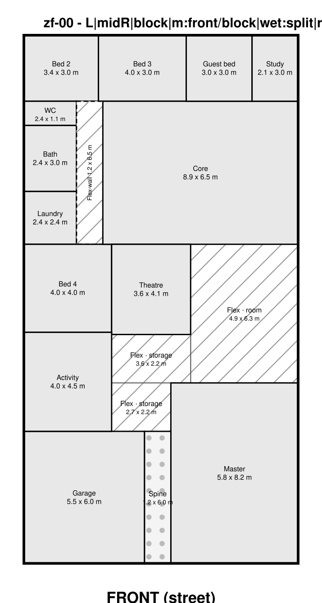
top 2 (rank 3 of 2916) L|midG|split|m:rear/split|wet:block|rr:FM|fw|v3 score 8.08 · Flex share 19% · living 13% (40.1 m²) · circulation 7% · Core 20% · pieces 7.0/100 m² · bedroom spread 0.0 m · wet near bed yes · laundry near yes · spine 6.0 m · extensions 3.1 m² · flex m²: room 32.3 · living 40.1 · circulation 7.2 · storage 17.1 · sliver 0.0
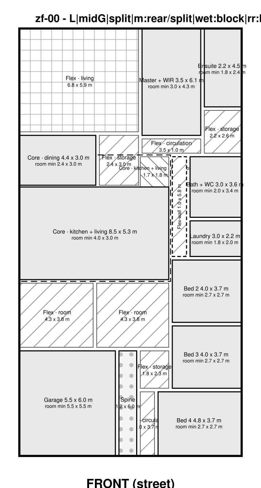
top 3 (rank 16 of 2916) L|midG|block|m:rear/split|wet:block|rr:MF|fw|v2 score 8.36 · Flex share 20% · living 13% (40.1 m²) · circulation 7% · Core 18% · pieces 6.7/100 m² · bedroom spread 0.0 m · wet near bed yes · laundry near yes · spine 6.0 m · extensions 0.0 m² · flex m²: room 47.6 · living 40.1 · circulation 3.7 · storage 7.2 · sliver 0.0
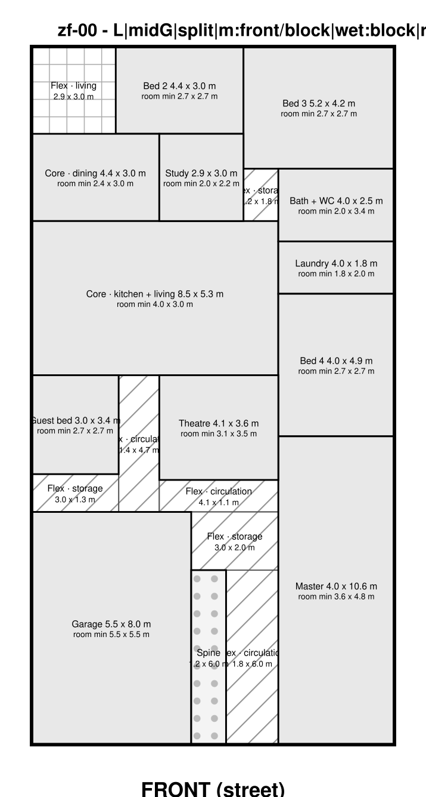
top 4, top 5 and the regression target match
top 4 (rank 31 of 2916) L|midW|block|m:rear/split|wet:block|rr:MF|nofw|v0 score 8.54 · Flex share 22% · living 13% (38.1 m²) · circulation 7% · Core 20% · pieces 6.7/100 m² · bedroom spread 0.0 m · wet near bed yes · laundry near yes · spine 6.0 m · extensions 16.4 m² · flex m²: room 47.7 · living 38.1 · circulation 14.3 · storage 4.5 · sliver 0.0
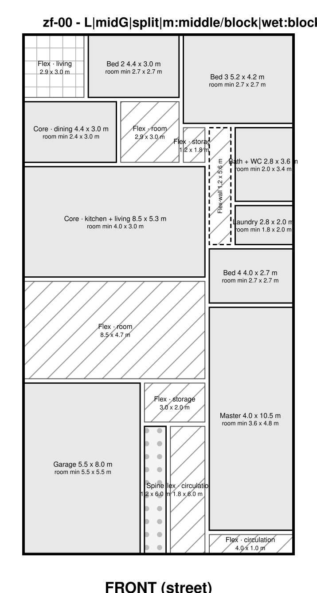
top 5 (rank 57 of 2916) L|midG|split|m:front/block|wet:split|rr:FBB|nofw|v0 score 9.06 · Flex share 23% · living 2% (7.1 m²) · circulation 9% · Core 19% · pieces 6.3/100 m² · bedroom spread 10.8 m · wet near bed yes · laundry near yes · spine 6.0 m · extensions 0.0 m² · flex m²: room 36.5 · living 7.1 · circulation 18.8 · storage 13.0 · sliver 0.0
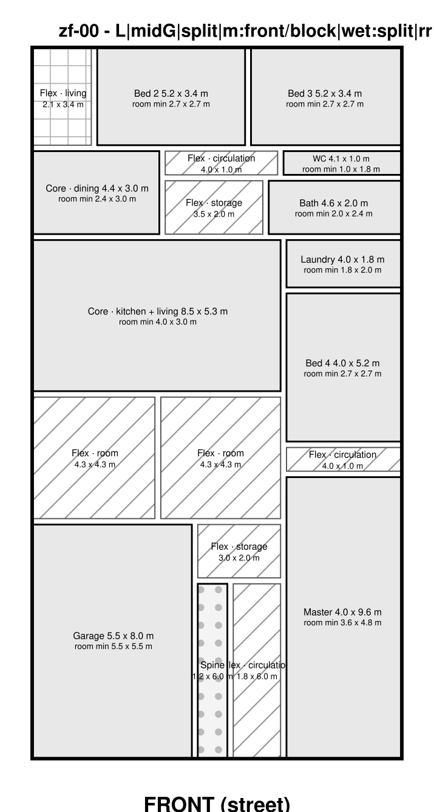
target match (regression) (rank 1580 of 2916) TARGET MATCH R|rear|block|m:middle/block|wet:split|rr:-|fw|v2 score 51.8 · Flex share 10% · living 0% (0.0 m²) · circulation 14% · Core 27% · pieces 5.3/100 m² · bedroom spread 0.0 m · wet near bed yes · laundry near yes · spine 6.0 m · extensions 22.8 m² · flex m²: room 0.0 · living 0.0 · circulation 29.0 · storage 0.0 · sliver 0.0
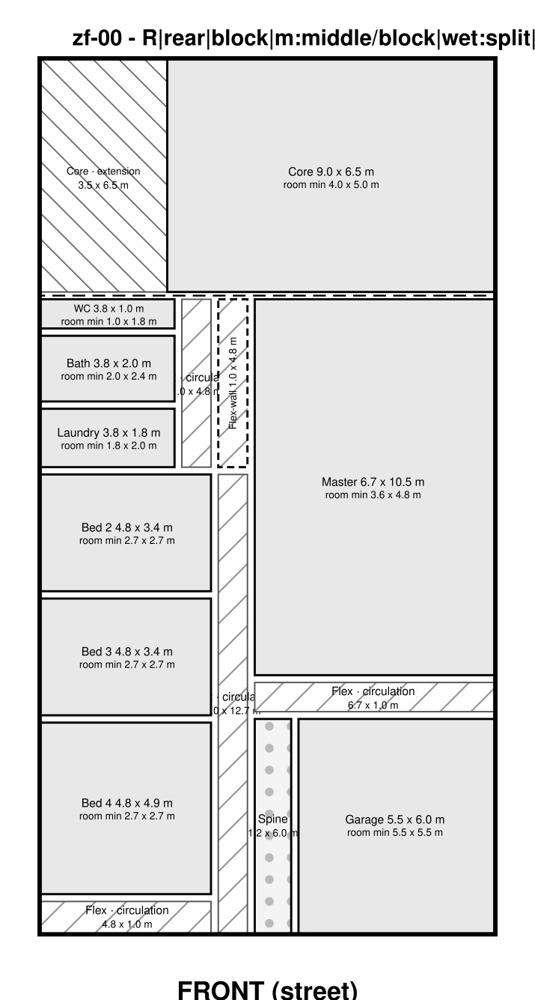
zf-01 - 2-bed 9.0 x 16.9 9000 x 16900 mm, 2 bed, single garage
valid 348/1472 generated · 234 distinct · 117 mirror images hidden · top 5 pairwise different: yes (largest same-kind overlap 0.62) blind test PASSED: best score in the top 5 7.94 vs the user's layout 42.61 (first candidate at least as good: rank 1); the user's layout: Flex 6%, circulation 15%, Core 33%; top 1 Flex 9%; closeness top 1 10%, best of all 76% regression target: matched, rank 28 of 234
top 1 (rank 1 of 234) L|midG|block|m:rear/split|wet:block|rr:FM|nofw|v2 score 7.94 · Flex share 9% · living 10% (15.8 m²) · circulation 5% · Core 19% · pieces 7.9/100 m² · bedroom spread 0.0 m · wet near bed yes · laundry near yes · closeness to the user's layout 10% · spine 6.0 m · extensions 0.0 m² · flex m²: room 0.0 · living 15.8 · circulation 0.0 · storage 14.0 · sliver 0.0
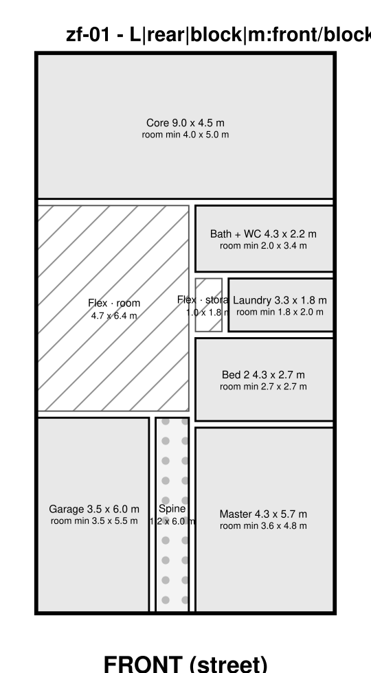
top 2 (rank 11 of 234) L|midW|block|m:rear/block|wet:block|rr:FM|fw|v0 score 8.42 · Flex share 6% · living 15% (22.5 m²) · circulation 8% · Core 24% · pieces 6.6/100 m² · bedroom spread 0.0 m · wet near bed yes · laundry near yes · closeness to the user's layout 8% · spine 6.0 m · extensions 0.0 m² · flex m²: room 0.0 · living 22.5 · circulation 0.0 · storage 8.9 · sliver 0.0
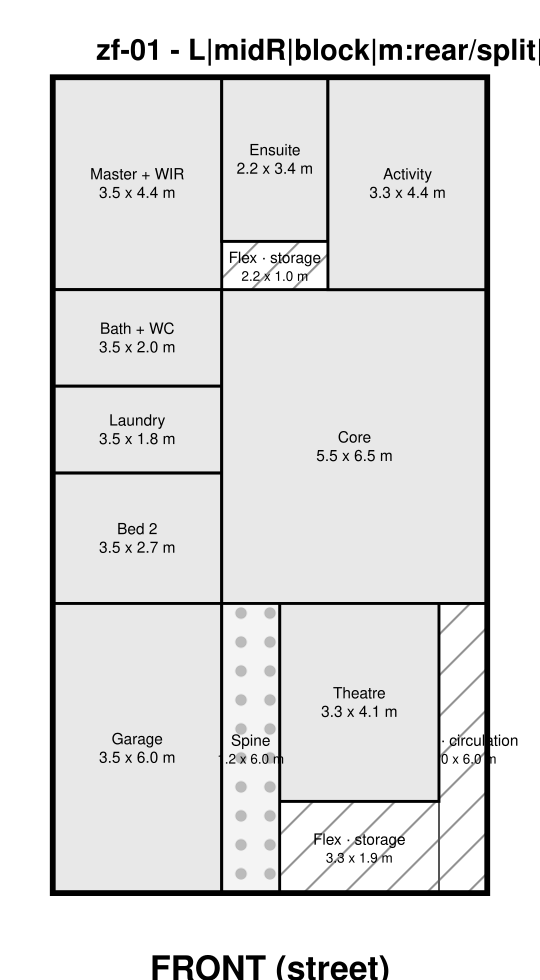
top 3 (rank 19 of 234) L|midR|block|m:rear/split|wet:block|rr:MF|nofw|v0 score 9.1 · Flex share 18% · living 10% (14.5 m²) · circulation 6% · Core 24% · pieces 7.9/100 m² · bedroom spread 0.0 m · wet near bed yes · laundry near yes · closeness to the user's layout 10% · spine 6.0 m · extensions 0.0 m² · flex m²: room 25.8 · living 14.5 · circulation 2.2 · storage 0.0 · sliver 0.0
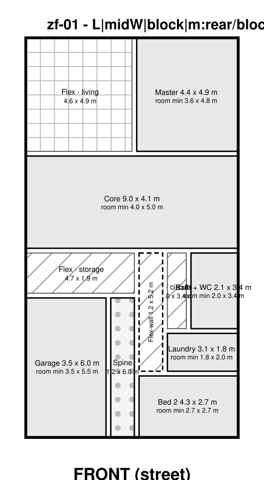
top 4, top 5 and the regression target match
top 4 (rank 27 of 234) L|rear|block|m:front/block|wet:block|rr:-|nofw|v2 score 9.58 · Flex share 20% · living 0% (0.0 m²) · circulation 5% · Core 27% · pieces 5.9/100 m² · bedroom spread 0.0 m · wet near bed yes · laundry near yes · closeness to the user's layout 33% · spine 6.0 m · extensions 0.0 m² · flex m²: room 30.1 · living 0.0 · circulation 0.0 · storage 0.0 · sliver 0.0
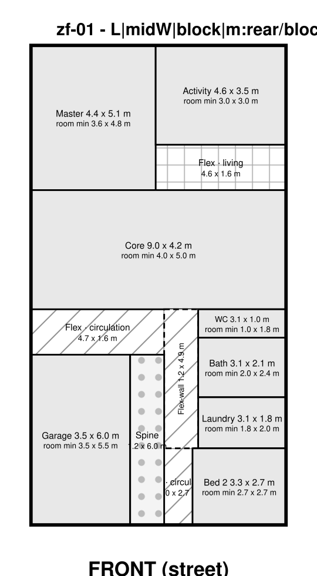
top 5 (rank 36 of 234) L|midW|block|m:rear/split|wet:block|rr:MF|nofw|v0 score 9.95 · Flex share 5% · living 11% (17.5 m²) · circulation 9% · Core 27% · pieces 7.2/100 m² · bedroom spread 0.0 m · wet near bed yes · laundry near yes · closeness to the user's layout 4% · spine 6.0 m · extensions 0.0 m² · flex m²: room 0.0 · living 17.5 · circulation 6.9 · storage 0.0 · sliver 0.0
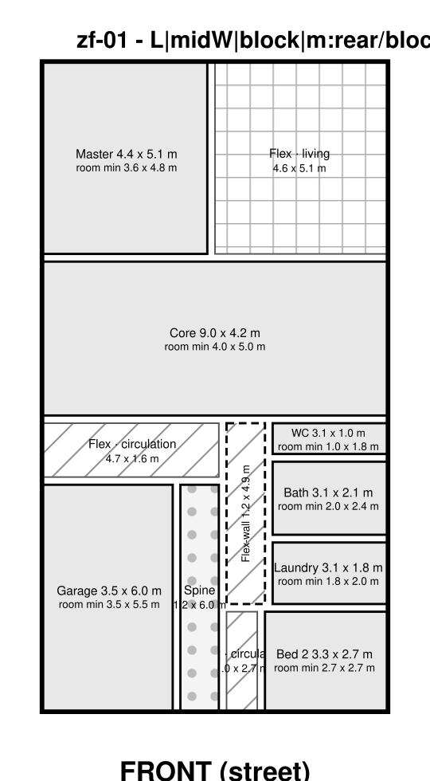
target match (regression) (rank 28 of 234) TARGET MATCH R|rear|block|m:front/block|wet:block|rr:-|nofw|v2 score 9.58 · Flex share 20% · living 0% (0.0 m²) · circulation 5% · Core 27% · pieces 5.9/100 m² · bedroom spread 0.0 m · wet near bed yes · laundry near yes · closeness to the user's layout 68% · spine 6.0 m · extensions 0.0 m² · flex m²: room 30.1 · living 0.0 · circulation 0.0 · storage 0.0 · sliver 0.0
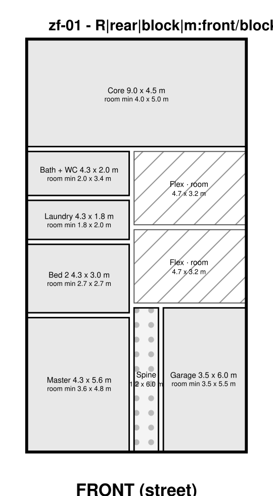
zf-03 - Turquoise Bay 9890 x 24790 mm, 4 bed, double garage
valid 948/5824 generated · 776 distinct · 388 mirror images hidden · top 5 pairwise different: yes (largest same-kind overlap 0.67) blind test PASSED: best score in the top 5 6.69 vs the user's layout 7.42 (first candidate at least as good: rank 1); the user's layout: Flex 3%, circulation 5%, Core 27%; top 1 Flex 9%; closeness top 1 30%, best of all 72% regression target: matched, rank 104 of 776
top 1 (rank 1 of 776) L|rear|block|m:middle/split|wet:split|rr:-|fw|v2 score 6.69 · Flex share 9% · living 0% (0.0 m²) · circulation 8% · Core 26% · pieces 6.9/100 m² · bedroom spread 0.0 m · wet near bed yes · laundry near yes · closeness to the user's layout 30% · spine 6.0 m · extensions 6.5 m² · flex m²: room 0.0 · living 0.0 · circulation 5.4 · storage 16.8 · sliver 0.0
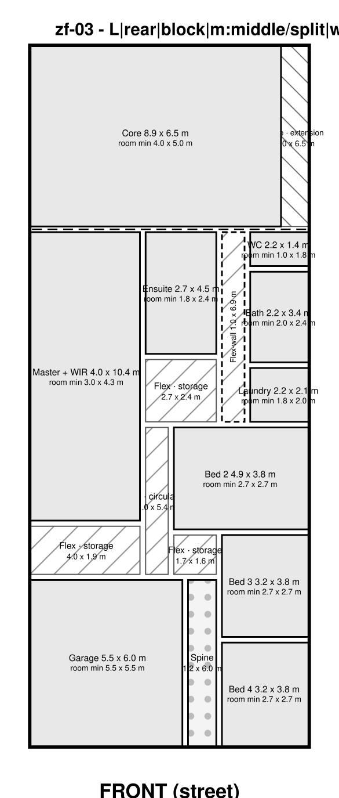
top 2 (rank 3 of 776) L|midG|split|m:rear/block|wet:split|rr:FM|fw|v0 score 6.71 · Flex share 11% · living 14% (34.0 m²) · circulation 6% · Core 23% · pieces 6.5/100 m² · bedroom spread 0.0 m · wet near bed yes · laundry near yes · closeness to the user's layout 60% · spine 6.0 m · extensions 0.0 m² · flex m²: room 20.7 · living 34.0 · circulation 0.0 · storage 6.9 · sliver 0.0
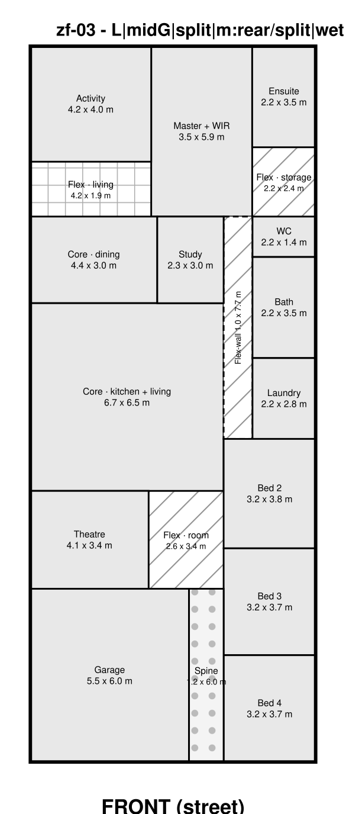
top 3 (rank 35 of 776) L|midW|split|m:rear/split|wet:block|rr:FM|nofw|v0 score 6.95 · Flex share 22% · living 8% (19.2 m²) · circulation 3% · Core 21% · pieces 7.3/100 m² · bedroom spread 0.0 m · wet near bed yes · laundry near yes · closeness to the user's layout 67% · spine 6.0 m · extensions 4.0 m² · flex m²: room 40.4 · living 19.2 · circulation 0.0 · storage 13.9 · sliver 0.0
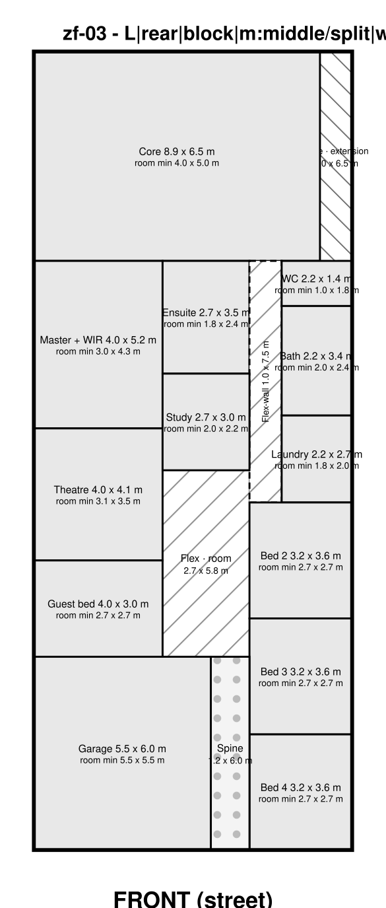
top 4, top 5 and the regression target match
top 4 (rank 39 of 776) L|midR|split|m:middle/block|wet:split|rr:FBB|fw|v0 score 6.97 · Flex share 17% · living 0% (0.0 m²) · circulation 8% · Core 21% · pieces 7.3/100 m² · bedroom spread 10.8 m · wet near bed yes · laundry near yes · closeness to the user's layout 26% · spine 6.0 m · extensions 0.0 m² · flex m²: room 34.0 · living 0.0 · circulation 7.4 · storage 1.3 · sliver 0.0
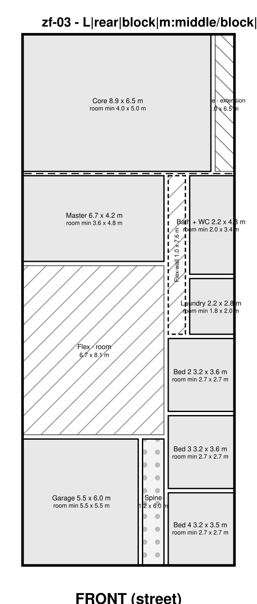
top 5 (rank 112 of 776) L|midG|block|m:rear/block|wet:split|rr:MF|fw|v0 score 7.62 · Flex share 17% · living 14% (34.0 m²) · circulation 6% · Core 18% · pieces 6.5/100 m² · bedroom spread 0.0 m · wet near bed yes · laundry near yes · closeness to the user's layout 46% · spine 6.0 m · extensions 0.0 m² · flex m²: room 40.8 · living 34.0 · circulation 0.0 · storage 0.0 · sliver 0.0
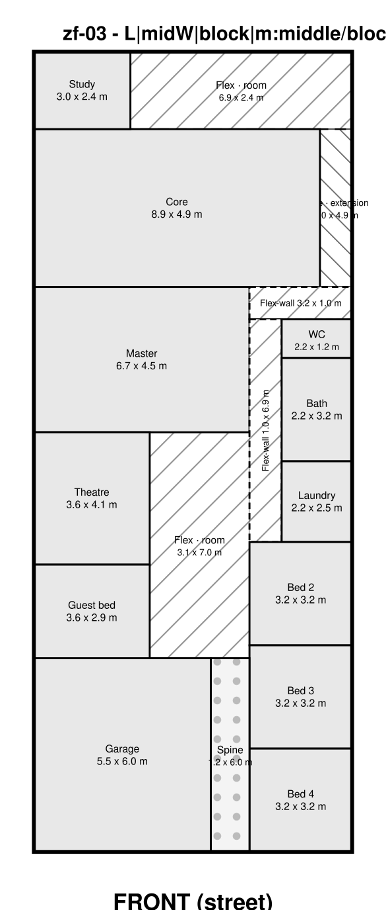
target match (regression) (rank 104 of 776) TARGET MATCH L|midW|split|m:rear/block|wet:block|rr:FM|fw|v0 score 7.57 · Flex share 21% · living 11% (26.4 m²) · circulation 5% · Core 26% · pieces 7.3/100 m² · bedroom spread 0.0 m · wet near bed yes · laundry near yes · closeness to the user's layout 70% · spine 6.0 m · extensions 17.2 m² · flex m²: room 50.9 · living 26.4 · circulation 0.0 · storage 0.0 · sliver 0.0
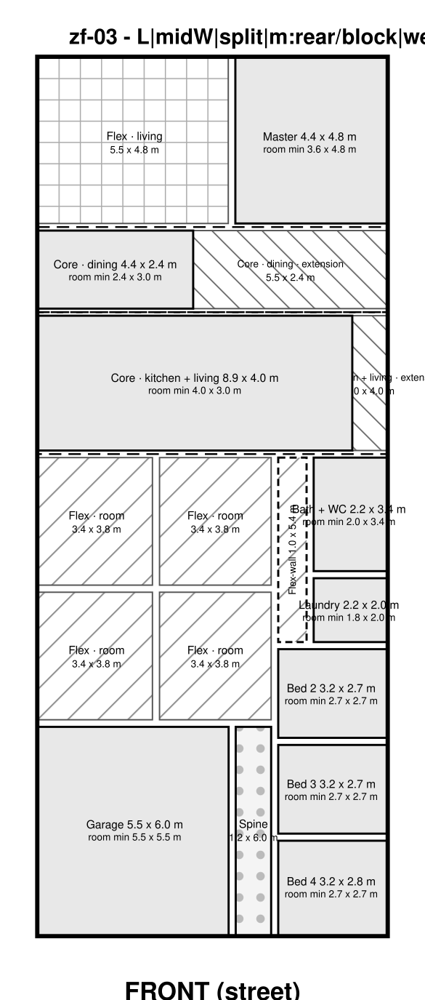
zf-04 - Torquay Beach 12490 x 24190 mm, 4 bed, double garage
valid 3480/5824 generated · 2926 distinct · 1463 mirror images hidden · top 5 pairwise different: yes (largest same-kind overlap 0.78) blind test PASSED: best score in the top 5 10.96 vs the user's layout 26.16 (first candidate at least as good: rank 1); the user's layout: Flex 22%, circulation 6%, Core 18%; top 1 Flex 14%; closeness top 1 37%, best of all 72% regression target: matched, rank 503 of 2926
top 1 (rank 1 of 2926) L|midW|split|m:rear/block|wet:block|rr:MF|nofw|v0 score 10.96 · Flex share 14% · living 21% (62.2 m²) · circulation 4% · Core 20% · pieces 5.6/100 m² · bedroom spread 0.0 m · wet near bed yes · laundry near yes · closeness to the user's layout 37% · spine 6.0 m · extensions 14.0 m² · flex m²: room 24.8 · living 62.2 · circulation 6.0 · storage 10.4 · sliver 0.0top 2 (rank 7 of 2926) L|midG|block|m:rear/split|wet:block|rr:FM|fw|v2 score 11.99 · Flex share 16% · living 13% (40.1 m²) · circulation 7% · Core 18% · pieces 6.3/100 m² · bedroom spread 0.0 m · wet near bed yes · laundry near yes · closeness to the user's layout 29% · spine 6.0 m · extensions 0.0 m² · flex m²: room 32.2 · living 40.1 · circulation 3.8 · storage 13.0 · sliver 0.0
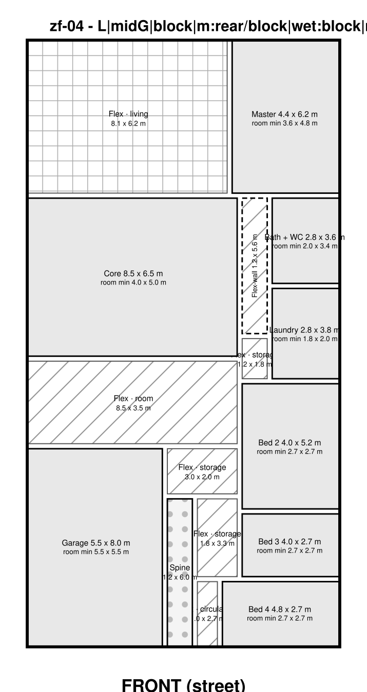
top 3 (rank 31 of 2926) L|rear|block|m:middle/split|wet:split|rr:-|nofw|v2 score 12.73 · Flex share 17% · living 0% (0.0 m²) · circulation 9% · Core 27% · pieces 6.0/100 m² · bedroom spread 0.0 m · wet near bed yes · laundry near yes · closeness to the user's layout 24% · spine 6.0 m · extensions 22.7 m² · flex m²: room 30.3 · living 0.0 · circulation 20.8 · storage 0.0 · sliver 0.0
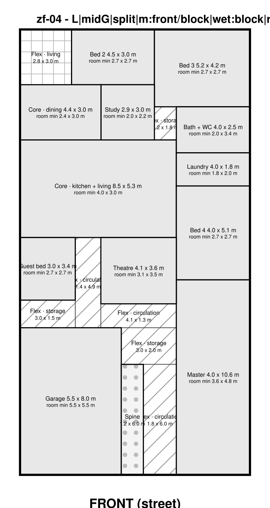
top 4, top 5 and the regression target match
top 4 (rank 59 of 2926) L|midW|block|m:rear/block|wet:block|rr:FM|nofw|v0 score 14.13 · Flex share 16% · living 16% (47.7 m²) · circulation 4% · Core 19% · pieces 6.0/100 m² · bedroom spread 0.0 m · wet near bed yes · laundry near yes · closeness to the user's layout 37% · spine 6.0 m · extensions 16.4 m² · flex m²: room 30.8 · living 47.7 · circulation 6.0 · storage 12.9 · sliver 0.0
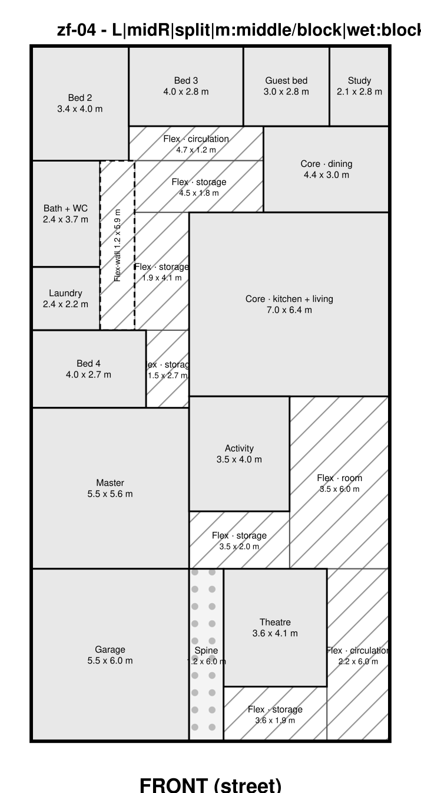
top 5 (rank 76 of 2926) L|midG|block|m:rear/split|wet:split|rr:MF|nofw|v0 score 15.39 · Flex share 19% · living 13% (40.1 m²) · circulation 8% · Core 18% · pieces 6.0/100 m² · bedroom spread 0.0 m · wet near bed yes · laundry near yes · closeness to the user's layout 35% · spine 6.0 m · extensions 0.0 m² · flex m²: room 32.3 · living 40.1 · circulation 16.7 · storage 9.0 · sliver 0.0
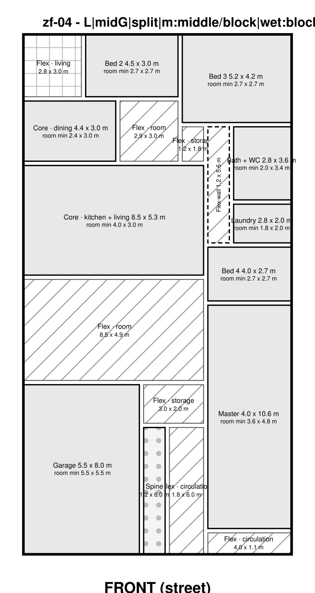
target match (regression) (rank 503 of 2926) TARGET MATCH L|midR|block|m:front/block|wet:split|rr:BBF|fw|v2 score 34.8 · Flex share 19% · living 2% (7.1 m²) · circulation 11% · Core 15% · pieces 6.3/100 m² · bedroom spread 11.5 m · wet near bed yes · laundry near yes · closeness to the user's layout 62% · spine 6.0 m · extensions 0.0 m² · flex m²: room 43.0 · living 7.1 · circulation 14.5 · storage 1.0 · sliver 0.0
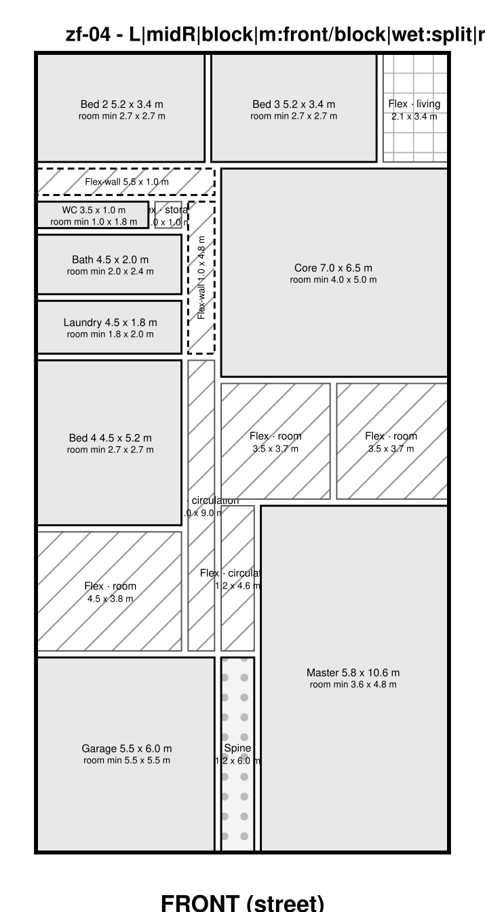
zf-05 - Swanbourne 10890 x 22590 mm, 4 bed, double garage
valid 1698/5824 generated · 1290 distinct · 645 mirror images hidden · top 5 pairwise different: yes (largest same-kind overlap 0.85) blind test PASSED: best score in the top 5 6.99 vs the user's layout 8.31 (first candidate at least as good: rank 1); the user's layout: Flex 12%, circulation 6%, Core 24%; top 1 Flex 16%; closeness top 1 46%, best of all 75% regression target: NOT matched - 6 of 8 aiming options are valid but none matches; the best (L|midR|block|m:front/block|wet:split|rr:BBF|fw|v1) differs in rearRow: got ["bed","bed"], wanted ["bed","bed","flex"]
top 1 (rank 1 of 1290) L|midG|split|m:front/block|wet:block|rr:BBF|nofw|v0 score 6.99 · Flex share 16% · living 0% (0.0 m²) · circulation 6% · Core 23% · pieces 6.1/100 m² · bedroom spread 10.3 m · wet near bed yes · laundry near yes · closeness to the user's layout 46% · spine 6.0 m · extensions 0.0 m² · flex m²: room 24.7 · living 0.0 · circulation 7.6 · storage 6.9 · sliver 0.0
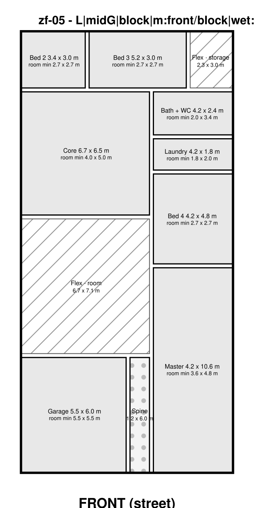
top 2 (rank 3 of 1290) L|rear|block|m:middle/split|wet:block|rr:-|fw|v2 score 7.13 · Flex share 6% · living 0% (0.0 m²) · circulation 11% · Core 29% · pieces 6.5/100 m² · bedroom spread 0.0 m · wet near bed yes · laundry near yes · closeness to the user's layout 24% · spine 6.0 m · extensions 12.3 m² · flex m²: room 0.0 · living 0.0 · circulation 14.7 · storage 1.1 · sliver 0.0
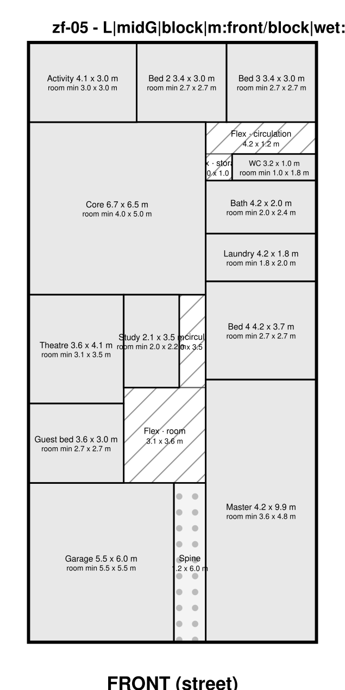
top 3 (rank 9 of 1290) L|midG|block|m:rear/block|wet:block|rr:FM|nofw|v0 score 7.34 · Flex share 11% · living 16% (40.2 m²) · circulation 3% · Core 18% · pieces 4.9/100 m² · bedroom spread 0.0 m · wet near bed yes · laundry near yes · closeness to the user's layout 25% · spine 6.0 m · extensions 0.0 m² · flex m²: room 26.1 · living 40.2 · circulation 0.0 · storage 0.0 · sliver 0.0
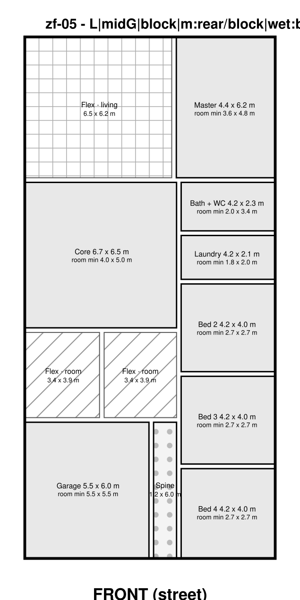
top 4, top 5 and the regression target match
top 4 (rank 39 of 1290) L|midW|block|m:rear/split|wet:block|rr:FM|nofw|v0 score 7.57 · Flex share 20% · living 11% (26.4 m²) · circulation 4% · Core 20% · pieces 6.9/100 m² · bedroom spread 0.0 m · wet near bed yes · laundry near yes · closeness to the user's layout 35% · spine 6.0 m · extensions 8.5 m² · flex m²: room 46.9 · living 26.4 · circulation 2.2 · storage 0.0 · sliver 0.0
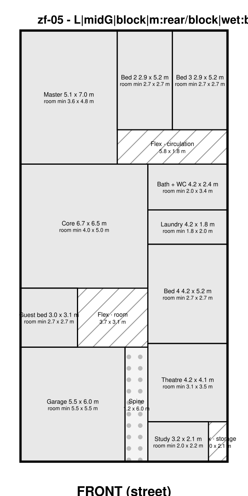
top 5 (rank 45 of 1290) L|midG|split|m:middle/block|wet:split|rr:FBB|fw|v2 score 7.59 · Flex share 16% · living 0% (0.0 m²) · circulation 10% · Core 23% · pieces 7.3/100 m² · bedroom spread 10.9 m · wet near bed yes · laundry near yes · closeness to the user's layout 42% · spine 6.0 m · extensions 0.0 m² · flex m²: room 24.7 · living 0.0 · circulation 7.6 · storage 6.9 · sliver 0.0
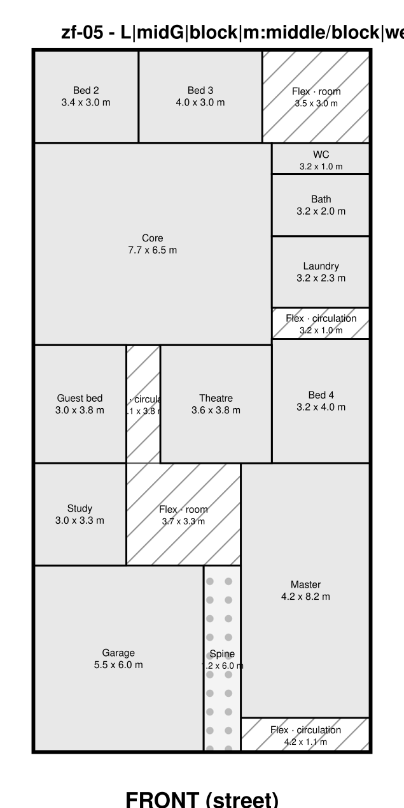
zf-07 - Riesling 11490 x 18290 mm, 4 bed, double garage
valid 1666/5824 generated · 1186 distinct · 593 mirror images hidden · top 5 pairwise different: yes (largest same-kind overlap 0.65) blind test PASSED: best score in the top 5 7.26 vs the user's layout 8.72 (first candidate at least as good: rank 1); the user's layout: Flex 7%, circulation 5%, Core 25%; top 1 Flex 5%; closeness top 1 16%, best of all 66% regression target: NOT matched - 8 of 8 aiming options are valid but none matches; the best (R|midG|block|m:middle/block|wet:split|rr:FBB|fw|v2) differs in rearRow: got ["bed","bed"], wanted ["bed","bed","flex"]; masterPos: got "front", wanted "middle"
top 1 (rank 1 of 1186) L|midG|split|m:front/block|wet:block|rr:FBB|fw|v0 score 7.26 · Flex share 5% · living 0% (0.0 m²) · circulation 7% · Core 25% · pieces 6.2/100 m² · bedroom spread 9.8 m · wet near bed yes · laundry near yes · closeness to the user's layout 16% · spine 6.0 m · extensions 0.0 m² · flex m²: room 0.0 · living 0.0 · circulation 3.7 · storage 6.9 · sliver 0.0
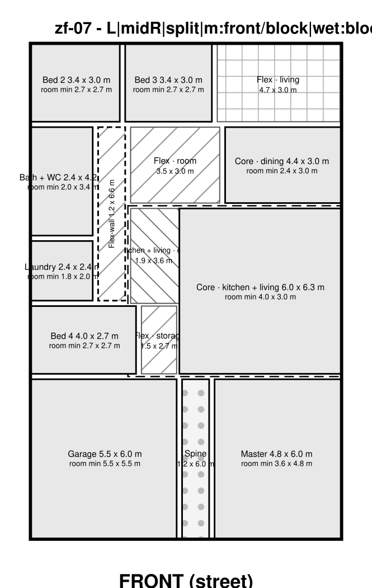
top 2 (rank 3 of 1186) L|rear|block|m:middle/split|wet:split|rr:-|fw|v2 score 7.37 · Flex share 8% · living 0% (0.0 m²) · circulation 8% · Core 24% · pieces 7.1/100 m² · bedroom spread 0.0 m · wet near bed yes · laundry near yes · closeness to the user's layout 4% · spine 6.0 m · extensions 10.9 m² · flex m²: room 11.9 · living 0.0 · circulation 4.0 · storage 0.0 · sliver 0.0
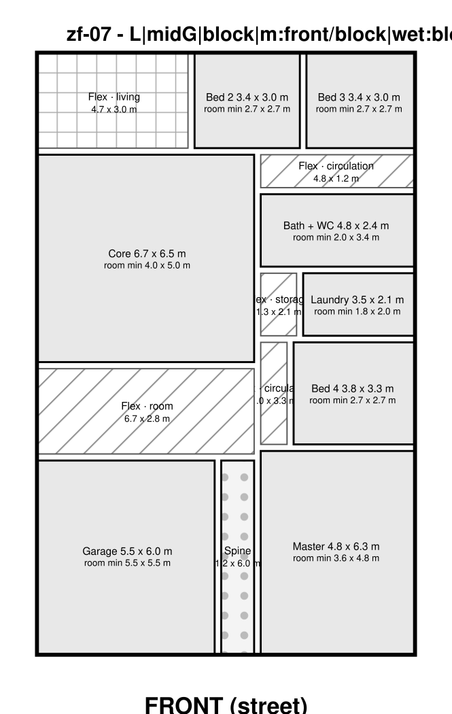
top 3 (rank 5 of 1186) L|midG|split|m:rear/block|wet:split|rr:MF|fw|v0 score 7.57 · Flex share 5% · living 0% (0.0 m²) · circulation 8% · Core 20% · pieces 6.7/100 m² · bedroom spread 0.0 m · wet near bed yes · laundry near yes · closeness to the user's layout 7% · spine 6.0 m · extensions 0.0 m² · flex m²: room 0.0 · living 0.0 · circulation 5.0 · storage 6.4 · sliver 0.0
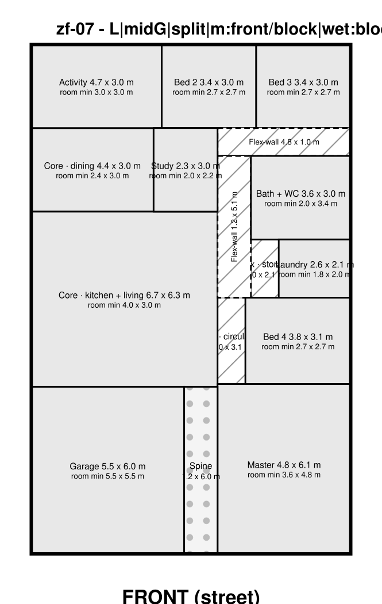
top 4, top 5 and the regression target match
top 4 (rank 55 of 1186) L|midR|block|m:front/block|wet:split|rr:BBF|fw|v0 score 8.97 · Flex share 4% · living 0% (0.0 m²) · circulation 10% · Core 25% · pieces 6.7/100 m² · bedroom spread 10.3 m · wet near bed yes · laundry near yes · closeness to the user's layout 39% · spine 6.0 m · extensions 0.0 m² · flex m²: room 0.0 · living 0.0 · circulation 7.8 · storage 1.2 · sliver 0.0
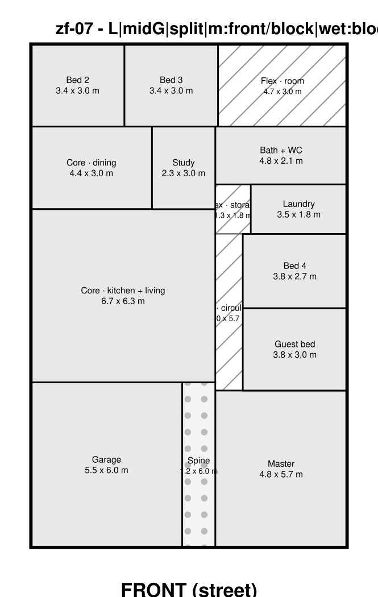
top 5 (rank 59 of 1186) L|midR|block|m:rear/split|wet:split|rr:BBFM|fw|v0 score 9.03 · Flex share 20% · living 0% (0.0 m²) · circulation 11% · Core 22% · pieces 9.0/100 m² · bedroom spread 0.0 m · wet near bed yes · laundry near yes · closeness to the user's layout 33% · spine 6.0 m · extensions 0.0 m² · flex m²: room 28.7 · living 0.0 · circulation 10.4 · storage 2.9 · sliver 0.0
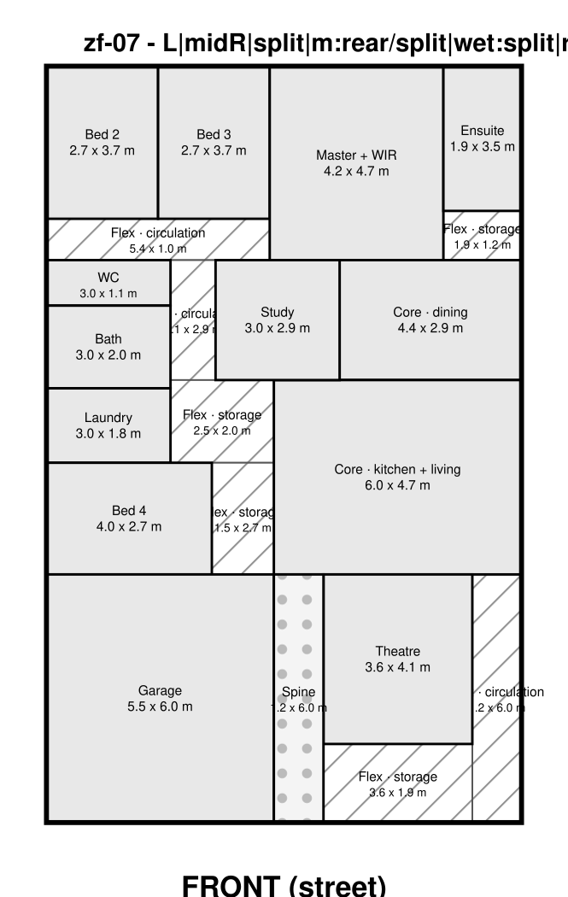
zf-08 - Manly 14990 x 21790 mm, 4 bed, double garage
valid 3396/5824 generated · 2552 distinct · 1276 mirror images hidden · top 5 pairwise different: yes (largest same-kind overlap 0.72) blind test NOT passed: best score in the top 5 8.51 vs the user's layout 7.92 (first candidate at least as good: rank none); the user's layout: Flex 12%, circulation 8%, Core 24%; top 1 Flex 20%; closeness top 1 23%, best of all 62% regression target: NOT matched - 8 of 8 aiming options are valid but none matches; the best (L|midG|split|m:middle/split|wet:split|rr:FBFB|fw|v2) differs in masterPos: got "front", wanted "middle" regression altTarget: matched, rank 1959 of 2552
top 1 (rank 1 of 2552) L|rear|block|m:middle/split|wet:split|rr:-|fw|v2 score 8.51 · Flex share 20% · living 0% (0.0 m²) · circulation 6% · Core 30% · pieces 5.8/100 m² · bedroom spread 0.0 m · wet near bed yes · laundry near yes · closeness to the user's layout 23% · spine 6.0 m · extensions 38.9 m² · flex m²: room 56.6 · living 0.0 · circulation 8.4 · storage 0.0 · sliver 0.0
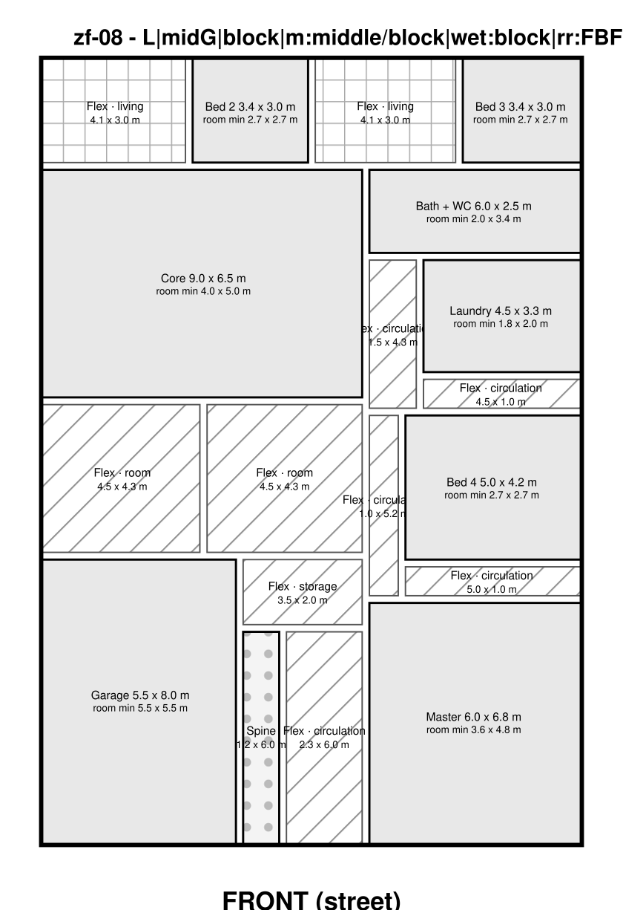
top 2 (rank 9 of 2552) L|midG|block|m:middle/split|wet:block|rr:FBFB|nofw|v1 score 13.29 · Flex share 23% · living 5% (15.6 m²) · circulation 11% · Core 18% · pieces 6.1/100 m² · bedroom spread 13.0 m · wet near bed yes · laundry near yes · closeness to the user's layout 49% · spine 6.0 m · extensions 0.0 m² · flex m²: room 38.1 · living 15.6 · circulation 28.0 · storage 8.6 · sliver 0.0
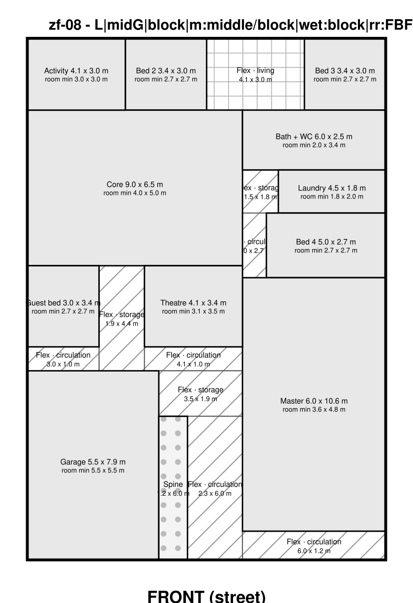
top 3 (rank 11 of 2552) L|midG|split|m:middle/split|wet:split|rr:FBFB|nofw|v0 score 16.82 · Flex share 28% · living 2% (7.8 m²) · circulation 14% · Core 18% · pieces 8.0/100 m² · bedroom spread 11.2 m · wet near bed yes · laundry near yes · closeness to the user's layout 62% · spine 6.0 m · extensions 0.0 m² · flex m²: room 9.3 · living 7.8 · circulation 37.5 · storage 46.0 · sliver 0.0
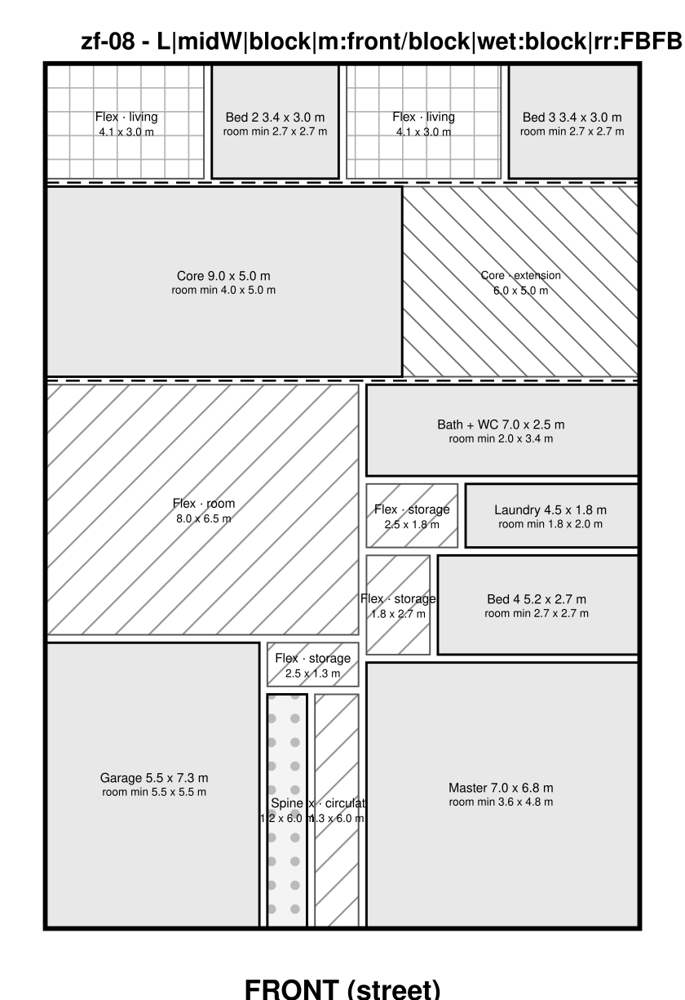
top 4, top 5 and the regression target match
top 4 (rank 17 of 2552) L|rear|block|m:front/block|wet:split|rr:-|fw|v2 score 19.57 · Flex share 33% · living 0% (0.0 m²) · circulation 5% · Core 20% · pieces 6.7/100 m² · bedroom spread 0.0 m · wet near bed yes · laundry near yes · closeness to the user's layout 32% · spine 6.0 m · extensions 26.3 m² · flex m²: room 90.9 · living 0.0 · circulation 3.2 · storage 13.4 · sliver 0.0
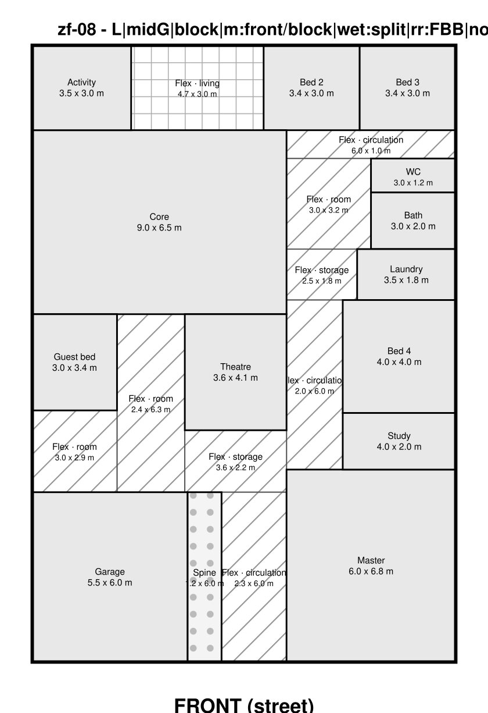
top 5 (rank 21 of 2552) L|midW|split|m:front/split|wet:block|rr:FBB|nofw|v0 score 21.8 · Flex share 23% · living 5% (15.6 m²) · circulation 2% · Core 24% · pieces 6.7/100 m² · bedroom spread 15.4 m · wet near bed yes · laundry near yes · closeness to the user's layout 47% · spine 6.0 m · extensions 29.7 m² · flex m²: room 56.6 · living 15.6 · circulation 0.0 · storage 17.3 · sliver 0.0
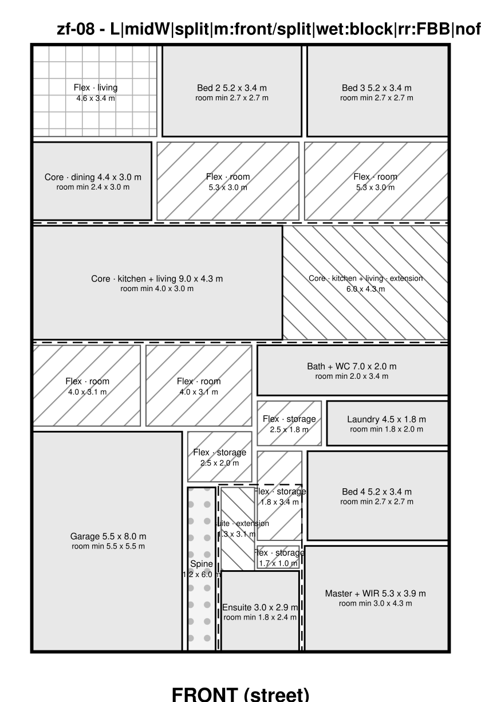
alt-target match (regression) (rank 1959 of 2552) ALT TARGET MATCH L|midW|block|m:middle/split|wet:block|rr:FBFB|fw|v3 score 87.14 · Flex share 28% · living 5% (15.6 m²) · circulation 14% · Core 18% · pieces 7.3/100 m² · bedroom spread 17.3 m · wet near bed yes · laundry near yes · closeness to the user's layout 39% · spine 6.0 m · extensions 0.0 m² · flex m²: room 46.1 · living 15.6 · circulation 35.5 · storage 9.8 · sliver 0.0
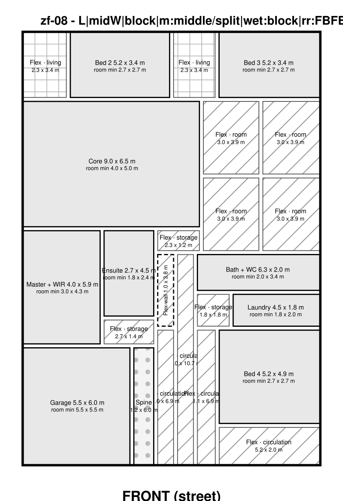
SAMPLE-15x27 - sample 15.0 x 27.0, 4 bed, double garage, WC 15000 x 27000 mm, 4 bed, double garage
valid 4344/5824 generated · 3862 distinct · 1931 mirror images hidden · top 5 pairwise different: yes (largest same-kind overlap 0.75) no layout of the user's for this brief: ranked against the profile of all seven plans
builder plan
no builder plan image for this brief
user's zoning drawing
no user zoning drawn for this brief
top 1 (rank 1 of 3862) L|midW|block|m:rear/split|wet:split|rr:MF|fw|v0 score 13.24 · Flex share 24% · living 14% (54.9 m²) · circulation 4% · Core 23% · pieces 6.2/100 m² · bedroom spread 0.0 m · wet near bed yes · laundry near yes · spine 6.0 m · extensions 36.6 m² · flex m²: room 78.5 · living 54.9 · circulation 3.2 · storage 16.5 · sliver 0.0
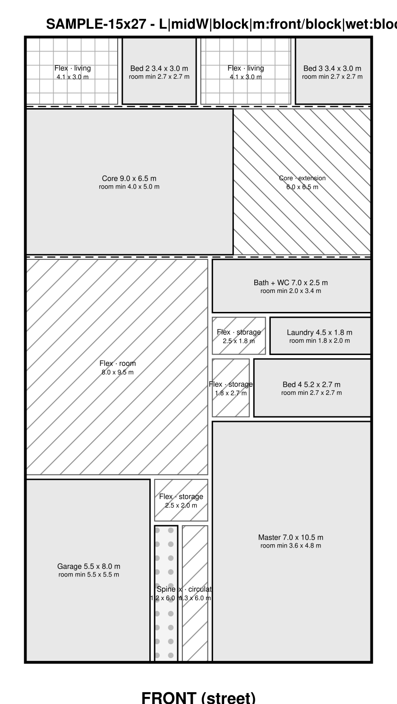
top 2 (rank 13 of 3862) L|rear|block|m:middle/split|wet:split|rr:-|fw|v2 score 17 · Flex share 31% · living 0% (0.0 m²) · circulation 4% · Core 24% · pieces 5.7/100 m² · bedroom spread 0.0 m · wet near bed yes · laundry near yes · spine 6.0 m · extensions 39.0 m² · flex m²: room 112.9 · living 0.0 · circulation 3.2 · storage 11.0 · sliver 0.0
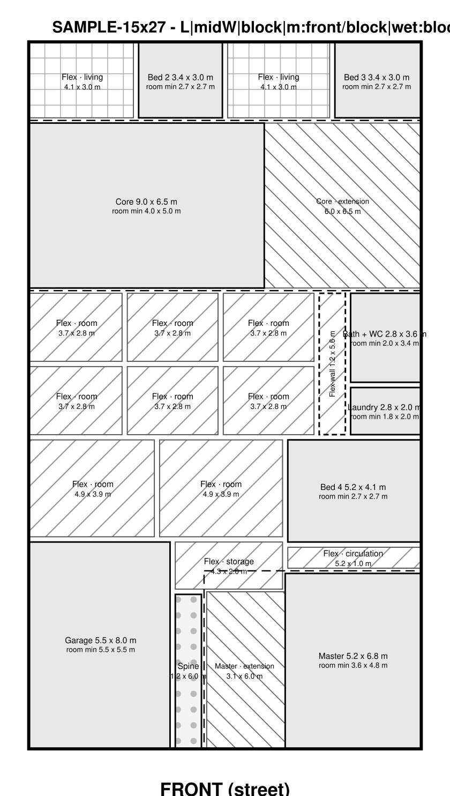
top 3 (rank 25 of 3862) L|rear|block|m:front/block|wet:split|rr:-|fw|v2 score 19.31 · Flex share 34% · living 0% (0.0 m²) · circulation 4% · Core 24% · pieces 6.2/100 m² · bedroom spread 0.0 m · wet near bed yes · laundry near yes · spine 6.0 m · extensions 39.0 m² · flex m²: room 119.1 · living 0.0 · circulation 3.8 · storage 14.0 · sliver 0.0
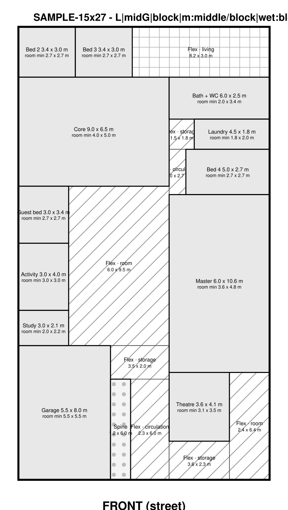
top 4, top 5 and the regression target match
top 4 (rank 37 of 3862) L|midW|block|m:middle/split|wet:split|rr:FBFB|fw|v0 score 23.9 · Flex share 28% · living 4% (15.6 m²) · circulation 5% · Core 24% · pieces 6.4/100 m² · bedroom spread 17.2 m · wet near bed yes · laundry near yes · spine 6.0 m · extensions 39.0 m² · flex m²: room 94.4 · living 15.6 · circulation 7.2 · storage 11.0 · sliver 0.0
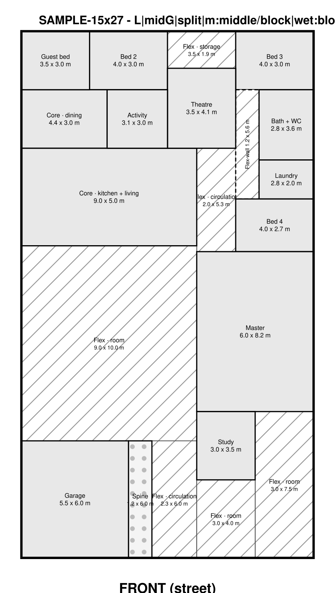
top 5 (rank 43 of 3862) L|midW|block|m:rear/split|wet:split|rr:FM|fw|v2 score 25.55 · Flex share 33% · living 14% (54.9 m²) · circulation 9% · Core 11% · pieces 6.4/100 m² · bedroom spread 0.0 m · wet near bed yes · laundry near yes · spine 6.0 m · extensions 0.0 m² · flex m²: room 104.6 · living 54.9 · circulation 17.5 · storage 13.4 · sliver 0.0
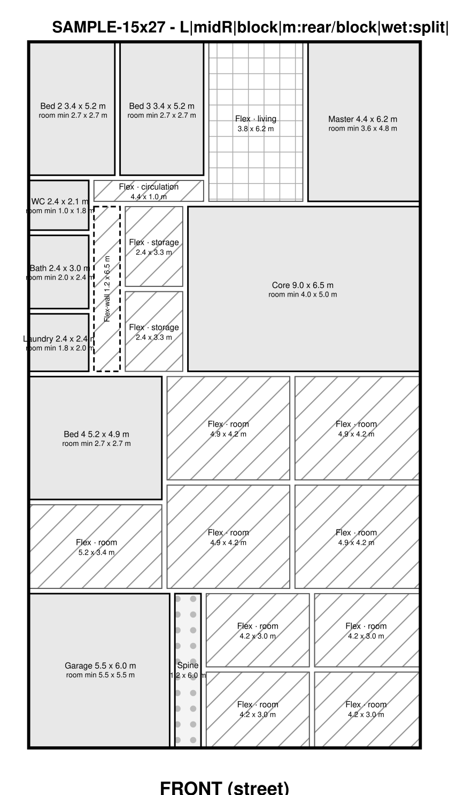
custom-8800x20550 - 8.8 x 20.55, Master + 3 bed, double garage 8800 x 20550 mm, 4 bed, double garage
valid 40/48 generated · 28 distinct · 14 mirror images hidden · top 5 pairwise different: yes (largest same-kind overlap 0.00) no layout of the user's for this brief: ranked against the profile of all seven plans
builder plan
no builder plan image for this brief
user's zoning drawing
no user zoning drawn for this brief
top 1 (rank 1 of 28) L|midG|block|m:middle/block|wet:split|rr:BBB|fw|v2 score 54.79 · Flex share 9% · living 0% (0.0 m²) · circulation 18% · Core 23% · pieces 7.7/100 m² · bedroom spread 5.8 m · wet near bed no · laundry near yes · spine 6.0 m · extensions 0.0 m² · flex m²: room 0.0 · living 0.0 · circulation 15.7 · storage 0.0 · sliver 0.0
top 4, top 5 and the regression target match
zf-17 - Botanica 36 14870 x 24590 mm, 4 bed, double garage
valid 4078/5824 generated · 3484 distinct · 1742 mirror images hidden · top 5 pairwise different: yes (largest same-kind overlap 0.78) blind test PASSED: best score in the top 5 10.15 vs the user's layout 27.31 (first candidate at least as good: rank 1); the user's layout: Flex 11%, circulation 8%, Core 12%; top 1 Flex 24%; closeness top 1 18%, best of all 71% regression target: matched, rank 1419 of 3484
builder plan
no builder plan image for this brief
user's zoning drawing
no user zoning drawn for this brief
the user's layout, measured (same style as candidates)top 1 (rank 1 of 3484) L|rear|block|m:middle/split|wet:split|rr:-|fw|v2 score 10.15 · Flex share 24% · living 0% (0.0 m²) · circulation 8% · Core 26% · pieces 6.3/100 m² · bedroom spread 0.0 m · wet near bed yes · laundry near yes · closeness to the user's layout 18% · spine 6.0 m · extensions 38.2 m² · flex m²: room 60.4 · living 0.0 · circulation 18.2 · storage 10.9 · sliver 0.0top 2 (rank 5 of 3484) L|midW|split|m:rear/split|wet:split|rr:MF|fw|v0 score 17.68 · Flex share 23% · living 18% (65.9 m²) · circulation 5% · Core 19% · pieces 6.8/100 m² · bedroom spread 0.0 m · wet near bed yes · laundry near yes · closeness to the user's layout 28% · spine 6.0 m · extensions 23.5 m² · flex m²: room 62.0 · living 65.9 · circulation 5.3 · storage 16.5 · sliver 0.0top 3 (rank 11 of 3484) L|rear|block|m:front/block|wet:split|rr:-|fw|v2 score 18.36 · Flex share 32% · living 0% (0.0 m²) · circulation 4% · Core 24% · pieces 6.0/100 m² · bedroom spread 0.0 m · wet near bed yes · laundry near yes · closeness to the user's layout 19% · spine 6.0 m · extensions 35.2 m² · flex m²: room 101.6 · living 0.0 · circulation 3.1 · storage 13.3 · sliver 0.0
top 4, top 5 and the regression target match
top 4 (rank 23 of 3484) L|midW|block|m:middle/split|wet:split|rr:FBFB|fw|v0 score 23.73 · Flex share 23% · living 4% (15.2 m²) · circulation 5% · Core 26% · pieces 6.3/100 m² · bedroom spread 17.2 m · wet near bed yes · laundry near yes · closeness to the user's layout 18% · spine 6.0 m · extensions 38.2 m² · flex m²: room 66.9 · living 15.2 · circulation 7.1 · storage 10.9 · sliver 0.0top 5 (rank 25 of 3484) L|midW|block|m:front/split|wet:split|rr:FBFB|fw|v0 score 24.42 · Flex share 24% · living 4% (15.2 m²) · circulation 6% · Core 26% · pieces 7.1/100 m² · bedroom spread 17.2 m · wet near bed yes · laundry near yes · closeness to the user's layout 20% · spine 6.0 m · extensions 38.2 m² · flex m²: room 65.5 · living 15.2 · circulation 8.3 · storage 13.3 · sliver 0.0target match (regression) (rank 1419 of 3484) TARGET MATCH R|midR|block|m:front/block|wet:split|rr:F|nofw|v0 score 73.5 · Flex share 29% · living 10% (35.7 m²) · circulation 7% · Core 15% · pieces 4.9/100 m² · bedroom spread 0.0 m · wet near bed yes · laundry near yes · closeness to the user's layout 58% · spine 6.0 m · extensions 0.0 m² · flex m²: room 81.1 · living 35.7 · circulation 17.1 · storage 8.0 · sliver 0.0